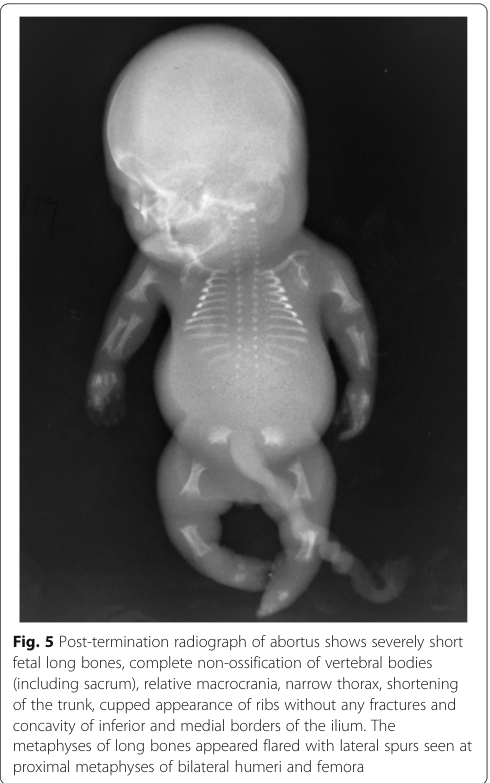

Achondrogenesis Type II (ACG2): Disease Characteristics Research Report
1. Disease Information
Overview / definition
Achondrogenesis type II (ACG2), also known as Langer–Saldino achondrogenesis, is a lethal congenital skeletal dysplasia on the severe end of the type II collagenopathy spectrum, typically presenting prenatally with extreme short limbs and a small thorax and resulting in stillbirth or death in the early neonatal period due to pulmonary hypoplasia/respiratory failure. (maheshwari2021acasereport pages 1-3, dogan2019achondrogenesistype2 pages 3-4, kobayashi2022novelmissensecol2a1 pages 1-2)
Direct abstract-supported definition example: “Achondrogenesis Type 2 is a lethal skeletal dysplasia …” with typical findings including “short arms and legs, a small chest with short ribs, lung hypoplasia …” (dogan2019achondrogenesistype2 pages 3-4)
Key identifiers
- OMIM: 200610 (Achondrogenesis type II) (kobayashi2022novelmissensecol2a1 pages 1-2, barathouari2016mutationupdatefor pages 1-2)
- Gene (OMIM): COL2A1 MIM 108300 (barathouari2016mutationupdatefor pages 1-2)
- MeSH / Orphanet / ICD-10 / ICD-11 / MONDO: Not found in retrieved sources for this run (see artifact table). (kobayashi2022novelmissensecol2a1 pages 1-2)
Synonyms / alternative names
- Achondrogenesis type II (ACG2) (kobayashi2022novelmissensecol2a1 pages 1-2)
- Langer–Saldino achondrogenesis (maheshwari2021acasereport pages 1-3)
- Achondrogenesis type II / hypochondrogenesis spectrum (korkko2000widelydistributedmutations pages 1-2)
Evidence sources used
The retrieved evidence includes both aggregated resources (variant/disease spectrum reviews and integrated variant analyses) and individual case reports/series (prenatal imaging and newborn presentations). (maheshwari2021acasereport pages 1-3, korkko2000widelydistributedmutations pages 1-2, barathouari2016mutationupdatefor pages 1-2, zhang2020integratedanalysisof pages 1-6)
2. Etiology
Disease causal factors
Primary cause: Germline pathogenic variants in COL2A1 (type II procollagen) causing type II collagenopathy with severe disruption of cartilage matrix and endochondral ossification. (barathouari2016mutationupdatefor pages 1-2, zhang2020integratedanalysisof pages 1-6)
Risk factors
- Genetic: Presence of a heterozygous pathogenic COL2A1 variant is causal. A frequent causal class in severe phenotypes is glycine substitution within the triple-helical Gly-X-Y repeats. (barathouari2016mutationupdatefor pages 1-2, korkko2000widelydistributedmutations pages 1-2)
- Non-genetic/environmental: No established environmental risk factors were identified in retrieved sources; ACG2 is primarily a monogenic disorder. (barathouari2016mutationupdatefor pages 1-2)
Protective factors / gene–environment interactions
No protective factors or gene–environment interactions were identified in the retrieved sources for ACG2. (barathouari2016mutationupdatefor pages 1-2)
3. Phenotypes (clinical + radiographic)
Typical timing and severity
ACG2 is typically prenatal-onset with severe skeletal abnormalities detectable on ultrasound and/or other fetal imaging, and the phenotype is severe and usually lethal. (maheshwari2021acasereport pages 1-3, kobayashi2022novelmissensecol2a1 pages 1-2)
Key prenatal phenotypes
Prenatal findings may include: * Severe limb shortening / micromelia (e.g., markedly low femur and humerus length Z-scores) (kobayashi2022novelmissensecol2a1 pages 1-2) * Thoracic hypoplasia/small chest, suggesting pulmonary hypoplasia risk (kobayashi2022novelmissensecol2a1 pages 1-2) * Cystic hygroma (reported in a 14-week fetus with ACG2) (kobayashi2022novelmissensecol2a1 pages 1-2) * Additional findings described in the broader ACG2/hypochondrogenesis fetal spectrum include hydrops and polyhydramnios. (korkko2000widelydistributedmutations pages 1-2)
Neonatal phenotypes
In liveborn infants, typical features include: * Short trunk, small/narrow chest, prominent/distended abdomen, and micromelia (dogan2019achondrogenesistype2 pages 3-4) * Severe respiratory distress due to pulmonary hypoplasia (dogan2019achondrogenesistype2 pages 3-4)
Hallmark radiographic phenotype (skeletal survey)
Classic radiographic findings reported across ACG2 cases include: * Very short long bones with widened/flared metaphyses (dogan2019achondrogenesistype2 pages 3-4) * Non-ossification or markedly decreased ossification of vertebral bodies (including cervical; and in some reports near-complete vertebral non-ossification) (maheshwari2021acasereport pages 1-3, dogan2019achondrogenesistype2 pages 3-4) * Short ribs (often without fractures) and narrow bell-shaped thorax (dogan2019achondrogenesistype2 pages 3-4) * Poor pelvic ossification with relatively preserved skull ossification (helpful discriminator vs some type I achondrogenesis forms) (dogan2019achondrogenesistype2 pages 3-4, dogan2019achondrogenesistype2 pages 4-5)
A representative post-termination radiograph showing these features (including vertebral non-ossification, flared metaphyses, cupped ribs, and iliac “paraglider” appearance) is available in the retrieved image evidence. (maheshwari2021acasereport media 016b7757)
Suggested HPO terms (examples)
Based on retrieved clinical/radiographic descriptions: * Micromelia, Short limb, Short long bones (maheshwari2021acasereport pages 1-3, kobayashi2022novelmissensecol2a1 pages 1-2) * Narrow thorax / thoracic hypoplasia, Short ribs, Bell-shaped thorax (dogan2019achondrogenesistype2 pages 3-4) * Pulmonary hypoplasia, Respiratory distress (dogan2019achondrogenesistype2 pages 3-4) * Abnormal vertebral ossification / absent vertebral ossification, Platyspondyly (conceptually consistent with near-complete absent vertebral ossification described) (maheshwari2021acasereport pages 1-3, maheshwari2021acasereport media 016b7757) * Cystic hygroma, Hydrops fetalis, Polyhydramnios (korkko2000widelydistributedmutations pages 1-2, kobayashi2022novelmissensecol2a1 pages 1-2)
Quality-of-life impact
Because ACG2 is typically perinatally lethal, longer-term quality-of-life outcomes are generally not applicable; for rare short-term survivors, quality of life is dominated by respiratory failure and intensive care needs. (dogan2019achondrogenesistype2 pages 3-4)
4. Genetic / Molecular Information
Causal gene(s)
- COL2A1 (type II procollagen alpha-1 chain) is the principal causal gene for ACG2. (barathouari2016mutationupdatefor pages 1-2, zhang2020integratedanalysisof pages 1-6)
Inheritance pattern
ACG2 is described as autosomal dominant; many cases are de novo, but recurrence can occur due to parental germline mosaicism. (maheshwari2021acasereport pages 1-3, faivre2004recurrenceofachondrogenesis pages 4-5, kobayashi2022novelmissensecol2a1 pages 1-2)
Variant spectrum and classes (ACG2-relevant)
Aggregated evidence indicates that severe COL2A1 phenotypes (including ACG2/hypochondrogenesis) are enriched for dominant-negative glycine substitutions in the triple helix: * “One-third of the mutations are dominant-negative mutations that affect the glycine residue in the G-X-Y repeats … [and] are common in achondrogenesis type II and hypochondrogenesis.” (barathouari2016mutationupdatefor pages 1-2)
A fetal case series found ACG2/HCG mutations distributed across the gene and reported classes including: * Glycine substitutions (10/12 in that cohort) * Splice-site mutation * In-frame deletion (18 bp) (korkko2000widelydistributedmutations pages 1-2)
Example pathogenic/likely pathogenic variants (HGVS)
Examples from retrieved primary reports: * NM_001844.5:c.2987G>A (p.Gly996Asp), classified “likely pathogenic (PS2+PM2+PP3+PP4)” in a fetus (kobayashi2022novelmissensecol2a1 pages 1-2) * c.2546G>A (p.Gly849Asp) (novel heterozygous missense) in a newborn (dogan2019achondrogenesistype2 pages 3-4)
Functional consequences and mechanistic interpretation
The dominant-negative triple-helix glycine substitutions are described as disrupting collagen structure: * “These mutations disrupt the collagen triple helix …” (barathouari2016mutationupdatefor pages 1-2)
Mechanistically, this is consistent with defective cartilage extracellular matrix formation and impaired endochondral ossification, producing the profound under-ossification and growth failure characteristic of ACG2. (barathouari2016mutationupdatefor pages 1-2, dogan2019achondrogenesistype2 pages 3-4)
Modifier genes / epigenetics / chromosomal abnormalities
No modifier genes, epigenetic drivers, or recurrent chromosomal abnormalities specific to ACG2 were identified in retrieved sources. (barathouari2016mutationupdatefor pages 1-2)
5. Environmental Information
No established environmental or infectious contributors are described in the retrieved sources; ACG2 is primarily a monogenic collagen disorder due to COL2A1 variants. (barathouari2016mutationupdatefor pages 1-2)
6. Mechanism / Pathophysiology
Causal chain (high-level)
- COL2A1 variant (often glycine substitution in triple helix; dominant-negative) (barathouari2016mutationupdatefor pages 1-2)
- Disrupted type II collagen triple-helix formation/structure and cartilage matrix integrity (barathouari2016mutationupdatefor pages 1-2)
- Abnormal cartilage growth plate biology (histology can show hypercellularity/enlarged chondrocytes and disrupted growth plate zonation) (faivre2004recurrenceofachondrogenesis pages 4-5)
- Failure of normal endochondral ossification → poor vertebral/pelvic ossification, markedly short long bones, short ribs, small thorax (maheshwari2021acasereport media 016b7757, dogan2019achondrogenesistype2 pages 3-4)
- Pulmonary hypoplasia from severely restricted thoracic development → perinatal respiratory failure and lethality (dogan2019achondrogenesistype2 pages 3-4)
Pathway/process ontology suggestions
- GO biological processes (suggestions): extracellular matrix organization; collagen fibril organization; endochondral ossification; cartilage development (supported conceptually by COL2A1 cartilage role and growth plate pathology descriptions) (faivre2004recurrenceofachondrogenesis pages 4-5, zhang2020integratedanalysisof pages 1-6, barathouari2016mutationupdatefor pages 1-2)
- Cell types (CL suggestions): chondrocyte (growth plate / cartilage) (faivre2004recurrenceofachondrogenesis pages 4-5)
Molecular profiling / single-cell / spatial / functional genomics
No ACG2-specific omics profiling (transcriptomic/proteomic/metabolomic) or single-cell/spatial studies were identified in retrieved sources for this run. (barathouari2016mutationupdatefor pages 1-2)
7. Anatomical Structures Affected
Organ/system level
Primary involvement is the skeletal system (long bones, ribs, spine, pelvis) with secondary lethal involvement of the respiratory system due to pulmonary hypoplasia. (dogan2019achondrogenesistype2 pages 3-4)
Tissue/cell level
Primary tissue pathology localizes to cartilage and the growth plate (disordered chondrocyte morphology/zoning). (faivre2004recurrenceofachondrogenesis pages 4-5)
UBERON suggestions
- vertebral column/vertebral bodies; rib; pelvis/ilium; limb long bones; cartilage; lung (maheshwari2021acasereport media 016b7757, dogan2019achondrogenesistype2 pages 3-4)
8. Temporal Development
- Onset: Congenital/prenatal; may be detectable in the first or second trimester depending on severity and imaging (e.g., 14-week fetus with severe limb shortening and cystic hygroma). (kobayashi2022novelmissensecol2a1 pages 1-2)
- Course: Not progressive in the typical sense; disease is usually perinatally lethal. (dogan2019achondrogenesistype2 pages 3-4)
9. Inheritance and Population
Epidemiology
A radiology case report review states an estimated frequency of approximately 0.2 per 100,000 births for achondrogenesis type II. (maheshwari2021acasereport pages 1-3)
De novo occurrence and recurrence risk
Although many cases occur de novo, familial recurrence has been documented and attributed to germline mosaicism, which is important for counseling. (faivre2004recurrenceofachondrogenesis pages 4-5)
Population demographics (sex ratio, geographic distribution) were not available in the retrieved sources for this run. (barathouari2016mutationupdatefor pages 1-2)
10. Diagnostics
Prenatal diagnosis
Imaging: Obstetric ultrasound is the primary screening and diagnostic modality. In fetal skeletal dysplasia evaluation, fetal CT is also referenced as an option in the ACG2 context. (kobayashi2022novelmissensecol2a1 pages 1-2)
A quantitative example from a prenatal imaging case report: an extremely low femur length/abdominal circumference ratio (FL/AC) of 0.08 (vs typical 0.20–0.25) was used as a strong indicator of lethal skeletal dysplasia in a reported ACG2 case. (maheshwari2021acasereport pages 1-3)
Postnatal/postmortem confirmation
Radiographic skeletal survey demonstrates the diagnostic pattern of under-ossification and limb/rib/pelvic abnormalities. (maheshwari2021acasereport media 016b7757, dogan2019achondrogenesistype2 pages 3-4)
Genetic testing
ACG2 can be confirmed by NGS-based molecular diagnosis (COL2A1 sequencing within targeted panels or exome approaches) with confirmatory Sanger sequencing in reported cases. (dogan2019achondrogenesistype2 pages 3-4)
Differential diagnosis
Important differentials discussed in retrieved sources include: * thanatophoric dysplasia * osteogenesis imperfecta type II * hypophosphatasia congenita and distinction from achondrogenesis type I subtypes can be supported by radiographic patterns (e.g., relatively preserved skull ossification in ACG2 with decreased pelvic/vertebral ossification). (maheshwari2021acasereport pages 1-3, dogan2019achondrogenesistype2 pages 4-5)
11. Outcome / Prognosis
ACG2 is consistently described as lethal, with death occurring in utero or in the early neonatal period, largely due to pulmonary hypoplasia and respiratory failure. (dogan2019achondrogenesistype2 pages 3-4, barathouari2016mutationupdatefor pages 1-2)
A documented liveborn course illustrates the severity: a newborn with ACG2 required high-frequency ventilation and died in the neonatal period. (dogan2019achondrogenesistype2 pages 3-4)
12. Treatment
Disease-modifying therapy
No disease-modifying pharmacologic or molecular therapy for ACG2 was identified in retrieved sources for this run. (barathouari2016mutationupdatefor pages 1-2)
Supportive/palliative care
Management for liveborn infants is generally supportive (e.g., respiratory support in intensive care), but overall survival is poor. (dogan2019achondrogenesistype2 pages 3-4)
MAXO term suggestions (examples)
- respiratory support
- palliative care
- neonatal intensive care
- genetic counseling
- prenatal molecular diagnosis
13. Prevention
Because ACG2 is genetic, “prevention” primarily consists of reproductive risk reduction and early detection: * Genetic counseling is emphasized in mutation-spectrum reviews as a critical component of care (“an early diagnosis is critical … and genetic counseling to affected families”). (barathouari2016mutationupdatefor pages 1-2) * Prenatal diagnosis in subsequent pregnancies may use targeted familial-variant testing (when known) plus fetal imaging. * Recurrence counseling should include the possibility of germline mosaicism. (faivre2004recurrenceofachondrogenesis pages 4-5)
Pregnancy termination after definitive diagnosis is discussed in lethal skeletal dysplasia case management contexts. (maheshwari2021acasereport pages 1-3)
14. Other Species / Natural Disease
No naturally occurring ACG2-equivalent disease in other species was identified in the retrieved sources for this run. (barathouari2016mutationupdatefor pages 1-2)
15. Model Organisms
No model organism studies specific to achondrogenesis type II were identified in the retrieved sources for this run (the retrieved literature focused on human case reports/series and human variant-spectrum analyses). (barathouari2016mutationupdatefor pages 1-2)
Summary tables (knowledge-base ready)
Table (click to expand)
| Section | Item | Details | Ontology suggestions | Evidence |
|---|---|---|---|---|
| Disease identifiers & synonyms | Primary disease name | Achondrogenesis type II; lethal congenital/perinatal skeletal dysplasia within the type II collagenopathy spectrum | MONDO: Not found in retrieved sources | (kobayashi2022novelmissensecol2a1 pages 1-2, maheshwari2021acasereport pages 1-3, barathouari2016mutationupdatefor pages 1-2) |
| Disease identifiers & synonyms | Named subtype / synonyms | Langer-Saldino achondrogenesis; ACG2; achondrogenesis type II/hypochondrogenesis spectrum | MONDO: Not found in retrieved sources | (maheshwari2021acasereport pages 1-3, korkko2000widelydistributedmutations pages 1-2) |
| Disease identifiers & synonyms | Database identifiers available in retrieved evidence | OMIM #200610 for achondrogenesis type II; COL2A1 MIM #108300 | MeSH: Not found in retrieved sources; Orphanet: Not found in retrieved sources; ICD-10: Not found in retrieved sources; ICD-11: Not found in retrieved sources | (kobayashi2022novelmissensecol2a1 pages 1-2, barathouari2016mutationupdatefor pages 1-2) |
| Disease identifiers & synonyms | Evidence provenance | Retrieved information is aggregated from disease-level and mutation review resources plus individual prenatal/newborn case reports, radiology reports, and molecular case series; not from EHR datasets | — | (kobayashi2022novelmissensecol2a1 pages 1-2, maheshwari2021acasereport pages 1-3, korkko2000widelydistributedmutations pages 1-2, barathouari2016mutationupdatefor pages 1-2) |
| Genetic / molecular | Causal gene | COL2A1 (collagen type II alpha 1 chain), encoding the alpha-1 chain of type II procollagen, the major collagen of cartilage | HGNC gene symbol: COL2A1 | (kobayashi2022novelmissensecol2a1 pages 1-2, barathouari2016mutationupdatefor pages 1-2, zhang2020integratedanalysisof pages 1-6) |
| Genetic / molecular | Inheritance | Typically autosomal dominant; many cases are de novo; recurrence can occur due to parental germline/somatic mosaicism | — | (maheshwari2021acasereport pages 1-3, faivre2004recurrenceofachondrogenesis pages 4-5, kobayashi2022novelmissensecol2a1 pages 1-2) |
| Genetic / molecular | Typical pathogenic variant classes | Predominantly heterozygous glycine substitutions in the triple-helical Gly-X-Y repeat; also splice-site variants and in-frame deletions reported | Sequence ontology suggestions: missense_variant, splice_acceptor_variant, inframe_deletion | (korkko2000widelydistributedmutations pages 1-2, barathouari2016mutationupdatefor pages 1-2) |
| Genetic / molecular | Example variants (HGVS) | c.2987G>A (p.Gly996Asp), likely pathogenic; c.2546G>A (p.Gly849Asp), novel; c.1267-2_1269del causing exon 21 skipping/in-frame deletion; familial recurrence reported with G316D | — | (kobayashi2022novelmissensecol2a1 pages 1-2, dogan2019achondrogenesistype2 pages 3-4, faivre2004recurrenceofachondrogenesis pages 4-5) |
| Genetic / molecular | Mechanistic notes | Glycine substitutions disrupt collagen triple-helix folding/assembly (dominant-negative effect), impair cartilage matrix formation, and underlie severe/lethal phenotypes; ACG2/hypochondrogenesis are among the most severe COL2A1 phenotypes, associated with neonatal death | GO: collagen trimer assembly; extracellular matrix organization; CL: chondrocyte | (barathouari2016mutationupdatefor pages 1-2, zhang2020integratedanalysisof pages 1-6) |
| Phenotype / anatomy | Core prenatal findings | Severe micromelia/short limbs, short humerus/femur, thoracic hypoplasia or small/narrow chest, cystic hygroma, hydrops/polyhydramnios, increased nuchal fold; may be detectable from first/second trimester | HPO: Short limb, Micromelia, Narrow thorax, Cystic hygroma, Hydrops fetalis, Polyhydramnios; UBERON: limb, thoracic cage | (kobayashi2022novelmissensecol2a1 pages 1-2, korkko2000widelydistributedmutations pages 1-2) |
| Phenotype / anatomy | Core neonatal/physical findings | Short trunk, prominent/distended abdomen, relatively large head/prominent forehead, small chin/midface hypoplasia, severe respiratory distress due to pulmonary hypoplasia | HPO: Short trunk, Abnormal abdomen morphology, Frontal bossing, Micrognathia, Midface retrusion, Respiratory distress, Pulmonary hypoplasia; UBERON: abdomen, lung, skull | (maheshwari2021acasereport pages 1-3, dogan2019achondrogenesistype2 pages 3-4) |
| Phenotype / anatomy | Hallmark radiographic findings | Very short long bones with widened/flared metaphyses; non-ossification or markedly reduced ossification of vertebral bodies (including cervical/sacral), lack of pelvic ossification, short unfractured ribs, narrow bell-shaped thorax, cupped ribs, iliac “paraglider” appearance; skull ossification usually relatively preserved compared with type I achondrogenesis | HPO: Platyspondyly/abnormal vertebral ossification, Short rib, Bell-shaped thorax, Short long bone, Flared metaphysis, Abnormal iliac bone morphology; UBERON: vertebral body, rib, ilium, pelvis | (maheshwari2021acasereport pages 1-3, dogan2019achondrogenesistype2 pages 3-4, maheshwari2021acasereport media 016b7757) |
| Phenotype / anatomy | Tissue/cell focus | Primary pathology localizes to cartilage/growth plate; histology shows hypercellular, hypervascular cartilage with enlarged chondrocytes and disorganized growth plate maturation | CL: chondrocyte; UBERON: cartilage tissue, growth plate; GO: endochondral ossification | (faivre2004recurrenceofachondrogenesis pages 4-5, barathouari2016mutationupdatefor pages 1-2) |
| Diagnostics | Prenatal imaging | Detailed obstetric ultrasound is first-line; fetal CT and sometimes MRI may assist characterization of skeletal dysplasia and thoracic/rib/ossification abnormalities | MAXO: prenatal imaging evaluation; fetal ultrasonography; computed tomography | (kobayashi2022novelmissensecol2a1 pages 1-2, hall2024fetalandperinatal pages 61-63) |
| Diagnostics | Postnatal / postmortem confirmation | Skeletal survey/radiography confirms classic ossification and limb/rib/pelvic abnormalities; pathology/histology may support classification | MAXO: radiographic skeletal survey; pathologic examination | (maheshwari2021acasereport pages 1-3, faivre2004recurrenceofachondrogenesis pages 4-5, maheshwari2021acasereport media 016b7757) |
| Diagnostics | Molecular testing strategy | Molecular confirmation by NGS-based testing (single-gene COL2A1, targeted skeletal dysplasia panels, clinical exome/WES); variants commonly confirmed by Sanger sequencing; exome sequencing increases diagnostic yield in fetuses with short long bones after negative karyotype/CMA | MAXO: sequence analysis of COL2A1; exome sequencing; confirmatory Sanger sequencing | (kobayashi2022novelmissensecol2a1 pages 1-2, dogan2019achondrogenesistype2 pages 3-4) |
| Diagnostics | Differential diagnosis clues | Distinguish from achondrogenesis type I, thanatophoric dysplasia, osteogenesis imperfecta type II, and hypophosphatasia congenita; preserved skull ossification with poor vertebral/pelvic ossification favors ACG2 over some type I forms | MAXO: differential diagnostic assessment | (maheshwari2021acasereport pages 1-3, dogan2019achondrogenesistype2 pages 4-5, dogan2019achondrogenesistype2 pages 3-4) |
| Management / prognosis / prevention | Prognosis | Usually lethal: many affected fetuses are stillborn or die in utero, immediately after birth, or in the early neonatal period; death is driven largely by pulmonary hypoplasia/respiratory failure | HPO: Perinatal lethality; Pulmonary hypoplasia | (maheshwari2021acasereport pages 1-3, dogan2019achondrogenesistype2 pages 3-4, barathouari2016mutationupdatefor pages 1-2, kobayashi2022novelmissensecol2a1 pages 1-2) |
| Management / prognosis / prevention | Supportive care | No disease-modifying therapy identified in retrieved evidence; neonatal management is supportive/palliative, including respiratory support when liveborn, but survival is generally poor | MAXO: respiratory support; palliative care; neonatal intensive care | (dogan2019achondrogenesistype2 pages 3-4, kobayashi2022novelmissensecol2a1 pages 1-2) |
| Management / prognosis / prevention | Prevention / reproductive options | Genetic counseling is recommended; prenatal diagnosis in future pregnancies via targeted molecular testing and fetal imaging; recurrence counseling should include possibility of germline mosaicism; pregnancy termination may be considered where legally/ethically appropriate after definitive diagnosis | MAXO: genetic counseling; prenatal molecular diagnosis; prenatal ultrasound monitoring; reproductive counseling | (maheshwari2021acasereport pages 1-3, faivre2004recurrenceofachondrogenesis pages 4-5, barathouari2016mutationupdatefor pages 1-2) |
| Research / real-world implementation | Current implementations / studies | A natural history study in children with type II collagen disorders and short stature is recruiting (NCT05408715), but retrieved evidence does not indicate an interventional trial specific to lethal ACG2 | MAXO: natural history study enrollment | (hall2024fetalandperinatal pages 61-63) |
Table: This table condenses the retrieved evidence on Achondrogenesis type II into knowledge-base-ready fields covering identifiers, genetics, phenotype, diagnostics, and management. It is useful as a structured source map with ontology suggestions and per-row citation IDs.
Key real-world implementations and recent developments (emphasis on 2023–2024 where available)
- A 2024 comprehensive resource on fetal and perinatal skeletal dysplasias highlights the role of multimodal fetal imaging and multidisciplinary evaluation for prenatal-onset skeletal dysplasia conditions and explicitly lists ACG2 within the COL2A1-related spectrum. (hall2024fetalandperinatal pages 61-63)
- Routine clinical implementation relies on NGS-based molecular confirmation of COL2A1 variants alongside classic radiographic patterns; mutation-spectrum curation supports clinical interpretation and counseling. (barathouari2016mutationupdatefor pages 1-2, dogan2019achondrogenesistype2 pages 3-4)
URLs and publication dates (retrieved sources cited)
- Barat-Houari et al. Human Mutation (Jan 2016). https://doi.org/10.1002/humu.22915 (barathouari2016mutationupdatefor pages 1-2)
- Doğan et al. Balkan J Med Genet (Jun 2019). https://doi.org/10.2478/bjmg-2019-0001 (dogan2019achondrogenesistype2 pages 3-4)
- Maheshwari et al. Egyptian J Radiol Nucl Med (Apr 2021). https://doi.org/10.1186/s43055-021-00479-0 (maheshwari2021acasereport pages 1-3)
- Kobayashi et al. Human Genome Variation (Nov 2022). https://doi.org/10.1038/s41439-022-00218-5 (kobayashi2022novelmissensecol2a1 pages 1-2)
- Hall et al. Fetal and perinatal skeletal dysplasias (Mar 2024; CRC Press/ArXiv entry). https://doi.org/10.1201/9781003166948 (hall2024fetalandperinatal pages 61-63)
Limitations of this report (evidence availability in this run)
- Standard identifiers beyond OMIM (Orphanet, ICD-10/11, MeSH, MONDO) were not present in the retrieved full texts; they should be added via dedicated ontology/database lookup workflows. (kobayashi2022novelmissensecol2a1 pages 1-2)
- No ACG2-specific interventional trials, omics studies, or model organism studies were retrieved/citable in this run; additional targeted searches would likely be required for those topics. (barathouari2016mutationupdatefor pages 1-2)
References
-
(maheshwari2021acasereport pages 1-3): Saurabh Maheshwari, Dilip Ingole, Samar Chatterjee, Uddandam Rajesh, and Varun Anand. A case report of achondrogenesis type ii (langer-saldino achondrogenesis). Egyptian Journal of Radiology and Nuclear Medicine, Apr 2021. URL: https://doi.org/10.1186/s43055-021-00479-0, doi:10.1186/s43055-021-00479-0. This article has 2 citations.
-
(dogan2019achondrogenesistype2 pages 3-4): P. Doğan, IG Varal, O. Gorukmez, M. Akkurt, and A. Akdağ. Achondrogenesis type 2 in a newborn with a novel mutation on the col2a1 gene. Balkan Journal of Medical Genetics, 22:89-94, Jun 2019. URL: https://doi.org/10.2478/bjmg-2019-0001, doi:10.2478/bjmg-2019-0001. This article has 7 citations.
-
(kobayashi2022novelmissensecol2a1 pages 1-2): Yukari Kobayashi, Yuki Ito, Kosuke Taniguchi, Kana Harada, Michihiro Yamamura, Taisuke Sato, Ken Takahashi, Hiroshi Kawame, Kenichiro Hata, Osamu Samura, and Aikou Okamoto. Novel missense col2a1 variant in a fetus with achondrogenesis type ii. Human Genome Variation, Nov 2022. URL: https://doi.org/10.1038/s41439-022-00218-5, doi:10.1038/s41439-022-00218-5. This article has 4 citations.
-
(barathouari2016mutationupdatefor pages 1-2): Mouna Barat-Houari, Guillaume Sarrabay, Vincent Gatinois, Aurélie Fabre, Bruno Dumont, David Genevieve, and Isabelle Touitou. Mutation update for col2a1 gene variants associated with type ii collagenopathies. Human Mutation, 37:7-15, Jan 2016. URL: https://doi.org/10.1002/humu.22915, doi:10.1002/humu.22915. This article has 173 citations and is from a domain leading peer-reviewed journal.
-
(korkko2000widelydistributedmutations pages 1-2): J. Körkkö, J. Körkkö, D. Cohn, L. Ala‐kokko, L. Ala‐kokko, D. Krakow, D. Krakow, and D. Prockop. Widely distributed mutations in the col2a1 gene produce achondrogenesis type ii/hypochondrogenesis. American journal of medical genetics, 92 2:95-100, May 2000. URL: https://doi.org/10.1002/(sici)1096-8628(20000515)92:2<95::aid-ajmg3>3.0.co;2-9, doi:10.1002/(sici)1096-8628(20000515)92:2<95::aid-ajmg3>3.0.co;2-9. This article has 76 citations.
-
(zhang2020integratedanalysisof pages 1-6): Boyan Zhang, Yue Zhang, Naichao Wu, Jianing Li, He Liu, and Jincheng Wang. Integrated analysis of col2a1 variant data and classification of type ii collagenopathies. Dec 2020. URL: https://doi.org/10.1111/cge.13680, doi:10.1111/cge.13680. This article has 61 citations and is from a peer-reviewed journal.
-
(dogan2019achondrogenesistype2 pages 4-5): P. Doğan, IG Varal, O. Gorukmez, M. Akkurt, and A. Akdağ. Achondrogenesis type 2 in a newborn with a novel mutation on the col2a1 gene. Balkan Journal of Medical Genetics, 22:89-94, Jun 2019. URL: https://doi.org/10.2478/bjmg-2019-0001, doi:10.2478/bjmg-2019-0001. This article has 7 citations.
-
(maheshwari2021acasereport media 016b7757): Saurabh Maheshwari, Dilip Ingole, Samar Chatterjee, Uddandam Rajesh, and Varun Anand. A case report of achondrogenesis type ii (langer-saldino achondrogenesis). Egyptian Journal of Radiology and Nuclear Medicine, Apr 2021. URL: https://doi.org/10.1186/s43055-021-00479-0, doi:10.1186/s43055-021-00479-0. This article has 2 citations.
-
(faivre2004recurrenceofachondrogenesis pages 4-5): Laurence Faivre, Martine Le Merrer, Serges Douvier, Nicole Laurent, Christel Thauvin‐Robinet, Thierry Rousseau, Inge Vereecke, Paul Sagot, Anne‐Lise Delezoide, Paul Coucke, and Geert Mortier. Recurrence of achondrogenesis type ii within the same family: evidence for germline mosaicism. American Journal of Medical Genetics Part A, 126A:308-312, Apr 2004. URL: https://doi.org/10.1002/ajmg.a.20597, doi:10.1002/ajmg.a.20597. This article has 27 citations.
-
(hall2024fetalandperinatal pages 61-63): Christine M Hall, Amaka C Offiah, Francesca Forzano, Mario Lituania, Gen Nishimura, and Valerie Cormier-Daire. Fetal and perinatal skeletal dysplasias. ArXiv, Mar 2024. URL: https://doi.org/10.1201/9781003166948, doi:10.1201/9781003166948. This article has 26 citations.
Artifacts
- Edison artifact artifact-00
